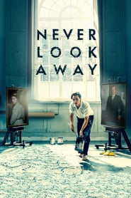

Never Look Away (2018)
အႏုပညာဆုိတာ ဘာလဲ။ အႏုပညာရွင္ဆုိတာ ဘာပါလဲ။နတ္ၾကီးတဲ့ေမးခြန္းေတြျဖစ္လုိ႔ ကုိယ္တုိင္မေျဖရဲလုိ႔ သူမ်ား ေျပာထားတာေတြပဲ ကုိးကားပါရေစ။ ဂ်ာမန္လူမ်ိဳးပန္းပုဆရာ Wilhelm Lehmbruck ကေတာ့ အႏုပညာပစၥည္းတစ္ခုဆုိတာ လူသားေတြ စျဖစ္တည္တုန္းက ကမာၻၾကီးကုိျမင္ရသလုိ အသစ္အဆန္းျဖစ္ေနရမယ္ တဲ့။အဲဒီစကားကုိ သူ႕ဘာသာရွိေနတုန္းကေတာ့မထူးျခားေပမဲ့ အႏုပညာနဲ႔ေပါင္းျပီး ခံစားတတ္တဲ့ႏွလုံးသားနဲ႔ ၾကည့္လုိက္တဲ့အခ်ိန္မွာ တန္ဖုိးတစ္ခုရွိလာျပီး၊ ထူးျခားတဲ့ လွပမႈပါရွိေနတဲ့အရာတစ္ခုျဖစ္လာပါတယ္ လုိ႔ ဒီဇာတ္လမ္းရဲ႕ အဓိကဇာတ္ေကာင္ဖစ္တဲ့ ကာ့တ္ က ခံယူထားပါတယ္။ အႏုပညာရွင္ဆုိတာကေရာ ဒီဇာတ္ကားထဲကပဲ မွီျငမ္းပါမယ္။အႏုပညာရွင္ဆုိတာတျခားအရာအားလုံးနဲ႔ အႏုပညာဆုိရင္ အႏုပညာကုိေရြးၾကတဲ့သူေတြပါတဲ့။ လူတုိင္းအႏုပညာရွင္ျဖစ္ႏုိင္ပါတယ္။ အႏုပညာကုိပဲရြးဖုိ႔လုိတာပါ။ ပန္းခ်ီ၊ ပန္းပု၊ ဂီတ ဘယ္အႏုပညာကုိမဆုိ ဘာအေႏွာင္အဖြဲ႕မွမရွိဘဲ လြတ္လြတ္လပ္လပ္ အႏုပညာကုိ ဖန္တီးၾကတဲ့ သူေတြ ေနာက္တစ္မ်ိဳးေျပာရရင္ အႏုပညာကုိဖန္တီးရင္းကမာၻၾကီးကေနလြတ္ေျမာက္ေနၾကသူေတြ လုိ႔ေျပာလုိ႔ရတာေပါ့။ကုိယ့္ကုိကုိယ္ လြတ္ေျမာက္ေအာင္ ၾကိဳးစားရင္းနဲ႔ ေလာကၾကီးကုိပါလြတ္လပ္ခြင့္ေပးသူေတြပါ။ အႏုပညာရွင္ဆုိတာ လြတ္ေျမာက္မႈကုိပေပးသူေတြ။ ရုိးသားသူေတြ၊ လမ္းရုိးကေဖာက္ထြက္သူေတြ။ လြတ္လပ္သူေတြပါပဲ။ Never Look Away ဆုိတဲ့ ဒီဇာတ္ကားေလးက၂၀၁၈ ကထြက္ခဲ့တာျဖစ္ျပီး ဒုတိယ ကမာၻစစ္ကုိ ျဖတ္သန္းလာရတဲ့ ပါရမီရွင္ ဂ်ာမန္အႏုပညာရွင္တစ္ေယာက္ရဲ႕ အေၾကာင္းကုိရုိက္ကူးထားတဲ့စိတ္ကူးယဥ္ဇာတ္လမ္းေလးပါ။ ဒီဇာတ္လမ္းေလးမွာ အႏုပညာအေၾကာင္းေတြအမ်ားၾကီးပါသလုိ ရုိးရုိး Romance ဇာတ္လမ္းေလးလုိ သေဘာထားၾကည့္ရင္လည္း ေတာ္ေတာ္ေကာင္းတဲ့ ဇာတ္ကားပါလုိ႔ေျပာပါရေစ။IMDB Rating ကေတာ့7.7/10 ျဖစ္ျပီး Rotten Tomato ကေတာ့ 77% ရရွိထားပါတယ္။ (ဇာတ္လမ္းအညႊန္း နဲ႕ ဘာသာျပန္ေပးထားသူကေတာ့ ေမသရဖီလြင္ပါ)
.jpg)
.jpg)
.jpg)